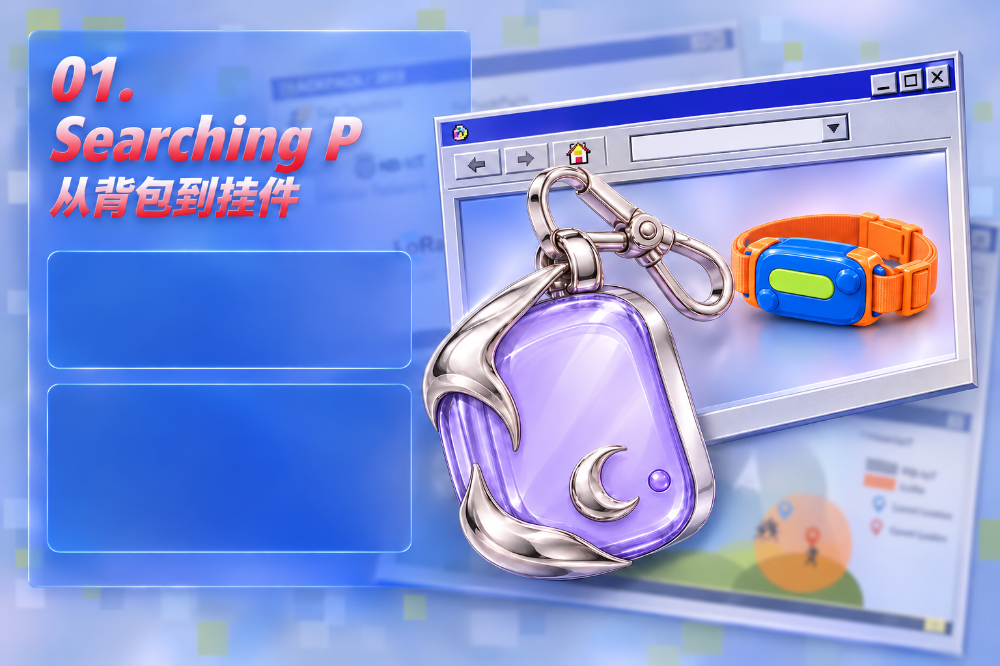
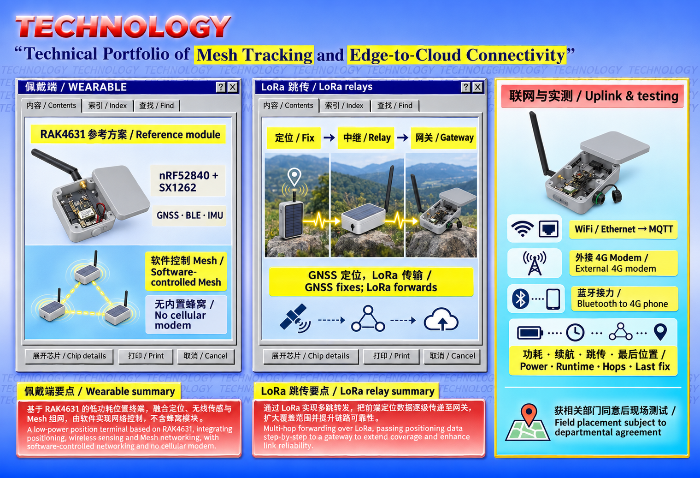
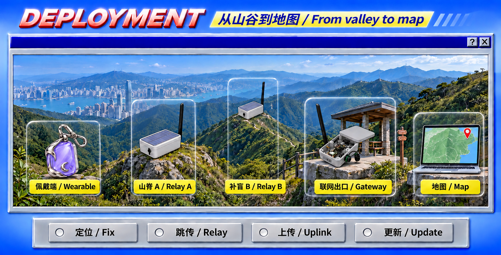
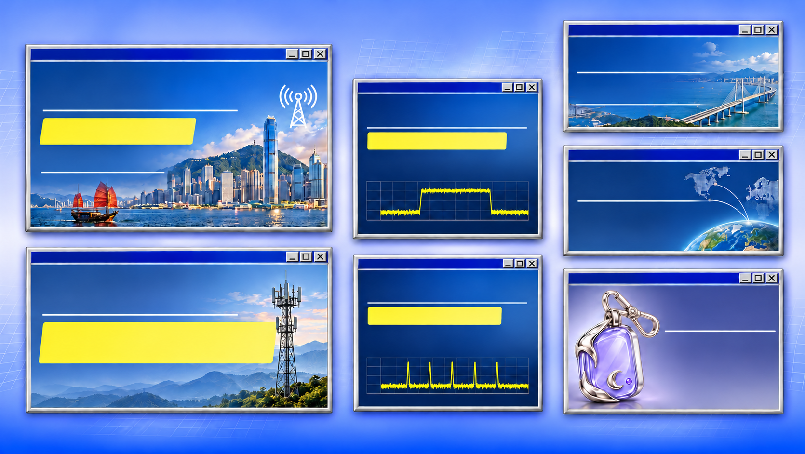
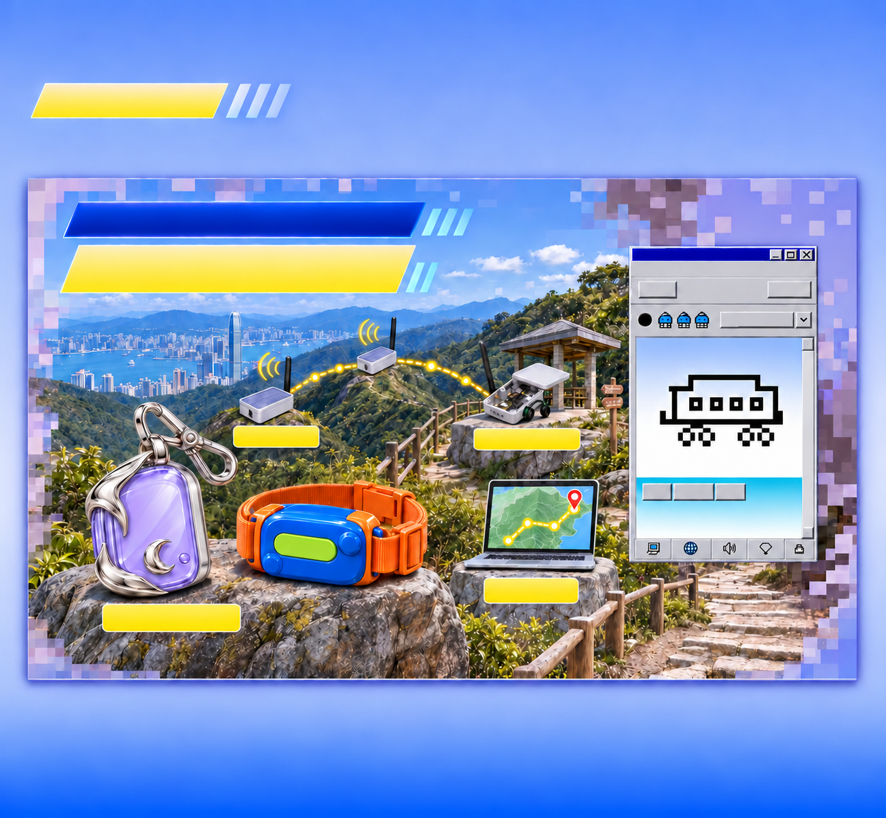
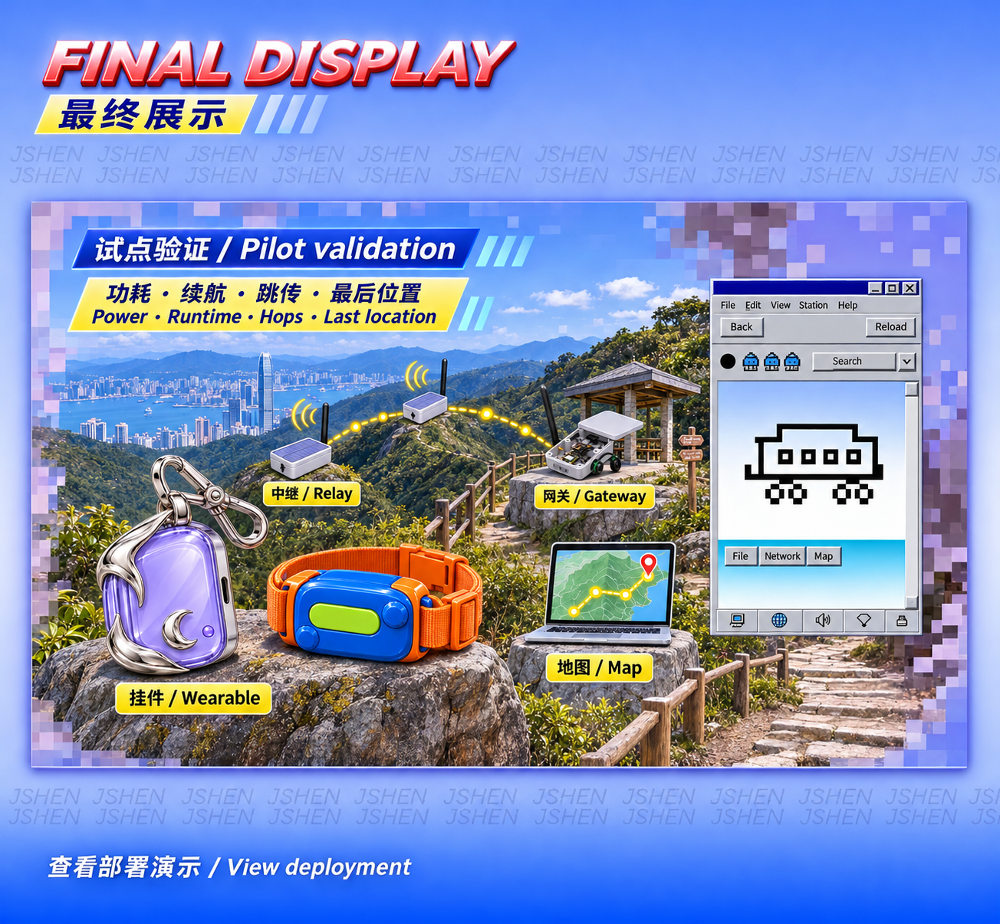
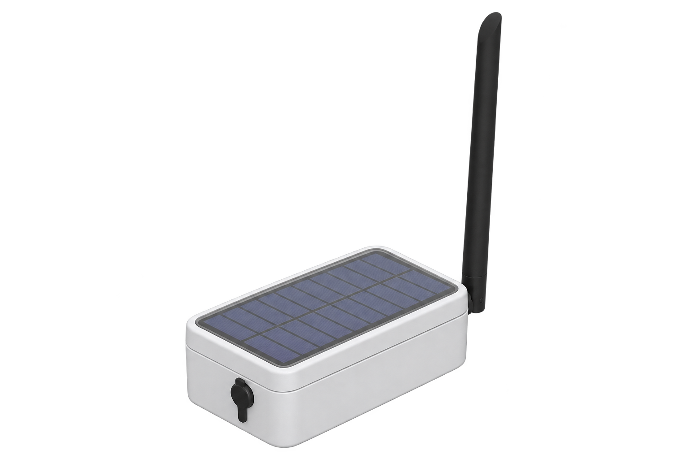
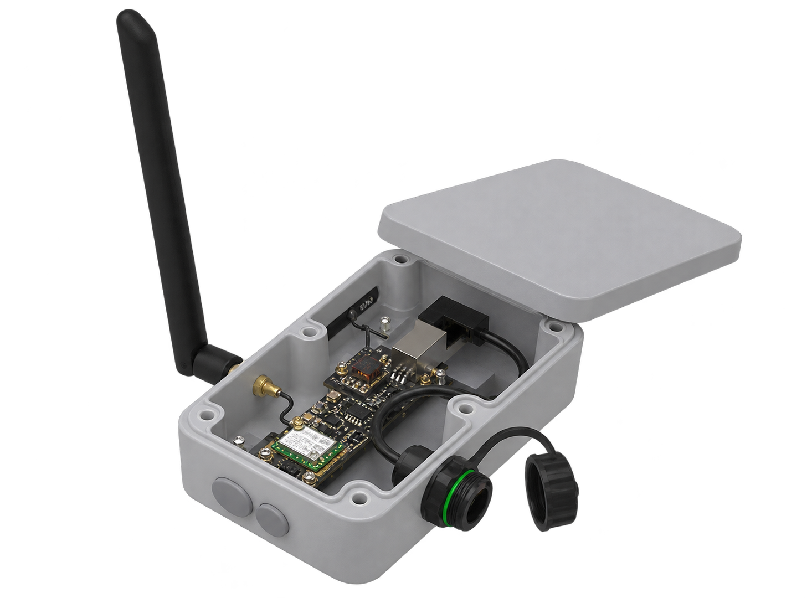

2019 · 原方案
太阳能背包：有蜂窝覆盖时走 NB-IoT，离网时走 LoRa。
Solar backpack. NB-IoT in coverage, LoRa off-grid.
本轮 · 最初构想
更小的人用与宠物挂件，集成 LoRa 和蜂窝通信（NB-IoT 或 4G）。兼顾外观，目标续航约一周。
Compact tags for people and pets, with LoRa and cellular. The early goal was a refined design and about one week of battery life.
查看技术架构 Explore technology ↓

Technical Portfolio of Mesh Tracking and Edge-to-Cloud Connectivity 联网与实测 / Uplink & testing
无内置蜂窝 / No cellular modem
定位 / Fix
功耗 · 续航 · 跳传 · 最后位置 / Power · Runtime · Hops · Last fix 获相关部门同意后现场测试 / Field placement subject to departmental agreement
佩戴端要点 / Wearable summary
参考 RAK4631，结合独立定位与运动检测。软件控制 Mesh。 / Reference RAK4631 with separate positioning and motion sensing. Software controls the mesh. LoRa 逐跳转发坐标，网关联网后上传。 / LoRa forwards coordinates hop by hop. A connected gateway uploads them.

等待定位Ready to locate
选择步骤或播放全链路 / Choose a stage or play the full route.
休眠与最后位置 / Sleep and last location
静止约 1–2 分钟后休眠是待测策略。LoRa 完全关闭时，挂件收不到远程唤醒指令。地图保留最后一次成功收到的位置和时间。
Sleep after 1–2 minutes of inactivity is a test setting. A switched-off LoRa radio cannot receive a remote wake command. The map retains the last successfully received position and timestamp.
嘉道理农场列作踏勘参考。 / Kadoorie Farm is a possible survey reference.
跳数和站距限制 / Hop & range limits
Meshtastic 常规转发默认建议 3 跳，上限 7。报文耗尽转发额度后，接收节点不会继续常规转发。2019 提案中的约 7 公里来自开阔环境示例，站距须以现场地形、天线和双向收包实测决定。
Meshtastic recommends a default of 3 hops, with a maximum of 7 for ordinary forwarding. A receiver stops ordinary forwarding once the packet exhausts its hop budget. The 2019 proposal cited about 7 km in open terrain. Set actual spacing using field tests of terrain, antennas and reception in both directions.
Meshtastic 配置建议 / Configuration guidance
B 站按覆盖实测决定。图中点位为示意，获相关部门同意后方可放置测试。 / Relay B is optional. Sites are illustrative and field placement requires departmental agreement.

香港试点HONG KONG PILOT
920–925 MHz按香港要求选型与测试。
Test under Hong Kong rules.
香港技术规格 / OFCA ↗大陆监管MAINLAND CHINA
频率 · 台站 · 型号核准按用途核对频率许可、台站执照及设备型号核准。
Check licensing and type approval.
无线电管理条例 / Regulation ↗微功率目录SRD CATALOGUE
工信部 2019 年第 52 号用途与参数须符合目录。
Use and limits must match.
第 52 号公告 / Notice ↗920–925 MHzRFID
工信部无〔2024〕76 号该规定适用于 RFID 设备。
RFID equipment only.
RFID 规定 / Rules ↗跨境测试CROSS-BORDER TESTING
入境前核对申报及临时进关批准要求。
Check declaration and entry approval.
第 47 条 / Article 47 ↗市场路径MARKET FOCUS
香港优先 · 欧洲与美国待评估。
Hong Kong first. EU and US subject to review.
精致外观DESIGN FOCUS
面向重视设计、消费力较高的 Z 世代。
For design-conscious, affluent Gen Z consumers.
法规原文与适用范围 / Sources and scope
香港试点设备赴大陆使用、销售或入境前须单独核对要求。大陆 920–925 MHz RFID 规定不提供户外 Mesh 定位组网许可。
Mainland use, sale or import requires a separate assessment. The 920–925 MHz RFID rules do not authorize outdoor Mesh tracking networks.
治安管理处罚法第 32 条 / Article 32 ↗


试点验证 / Pilot validation功耗 · 续航 · 跳传 · 最后位置
Power · Runtime · Hops · Last location中继 / Relay网关 / Gateway地图 / Map挂件 / Wearable查看部署演示 / View deployment ↗挂件内部 / Inside the wearable
功耗测试 / Power tests容量对照：T1000‑E 700 mAh、WisMesh Tag 1,000 mAh、Pocket V2 3,200 mAh。约一周是早期设计目标。
Battery references: T1000‑E 700 mAh, WisMesh Tag 1,000 mAh and Pocket V2 3,200 mAh. One week was an early design target.
Seeed 数据手册 ↗ · WisMesh Tag ↗ · Pocket V2 ↗
分别测首次定位、持续收听、发射和休眠。比较人的步行、跑动与宠物持续活动，再定上报频率和电池容量。
Measure first fix, listening, transmission and sleep separately. Compare walking, running and sustained pet activity before choosing reporting intervals and battery capacity.
求助键发送求助信号和位置给接收人员。 / The help button shares a request and location with the recipient.
Seeed T1000-E｜测试参考机
定位与通信
GNSS 取得卫星坐标。
LoRa Mesh 传送位置与求助报文。
蓝牙 在近距离与手机连接。
感应与供电
惯性传感器 检测活动，由程序控制定位与无线电唤醒。
充电电池 供电；静止后测试休眠与最后位置保存。
按键 用于人员主动发出求助信号。
候选测试 / Bench tests
对比定位启动、待机功耗和跳传表现。
Compare acquisition time, idle power and relay performance.
山上选址 / Site layout

山脊中继 / Ridge relay
联网出口 / Gateway佩戴端 → LoRa → 覆盖中继 → LoRa → 联网出口 → MQTT → 地图／联络端
野外点位为示意。实地放置前须与相关部门协商并获同意，按覆盖实测和供电条件选点。
方案取舍 / Design decisions
2019 Searching P / TrackPack → 小型挂件
旧方案把太阳能板、NB-IoT 与 LoRa 放在背包上。背包有空间承载硬件，但难以让宠物和人共用同一佩戴形态。新版把太阳能供电留给固定中继，把互联网出口放到网关或手机，挂件专注定位与传讯。
为什么不把蜂窝模块装进挂件？
蜂窝上报依赖运营商覆盖，安装模块、电源与天线也会占据挂件空间。将蜂窝放在出口可降低每个佩戴端的负担，但效果仍取决于 LoRa 跳传路径与出口可用性。
为什么先买现成设备实测？
用现成设备测接收与发射电流、冷热启动、跳传、不同运动状态下的续航和最后位置误差。人员步行、奔跑及宠物持续活动分别测试，用数据确定上报间隔和后续体积。
试点预算 / Pilot budget
LoRa 中继 / LoRa relay
US$89.90–99.90 / 台
两台 US$179.80–199.80
RAKwireless 原厂标价 ↗企业 NB-IoT 站点 / Enterprise NB-IoT site
香港单站报价待询
香港偏远地区 5G 工程 / Rural 5G works
每站资助上限 HK$200 万，复杂工程 HK$400 万。
通讯办资助计划 ↗佩戴参考机 / Wearable太阳能中继 / Solar relayMQTT 网关 / Gateway
佩戴参考机 × 1HK$300–500
太阳能中继 × 2HK$1,200–2,400 合计
网关 × 1HK$400–900
站点安装预留 × 2HK$600–1,600 合计
合计 HK$2,500–5,400。为整套演示预留的预算区间，采购价以供应商报价为准。另计运费、施工与巡检、可选 4G 路由器及流量。
采用现成中继原装外壳。安装点须验证太阳能采光、天线净空和维护条件。